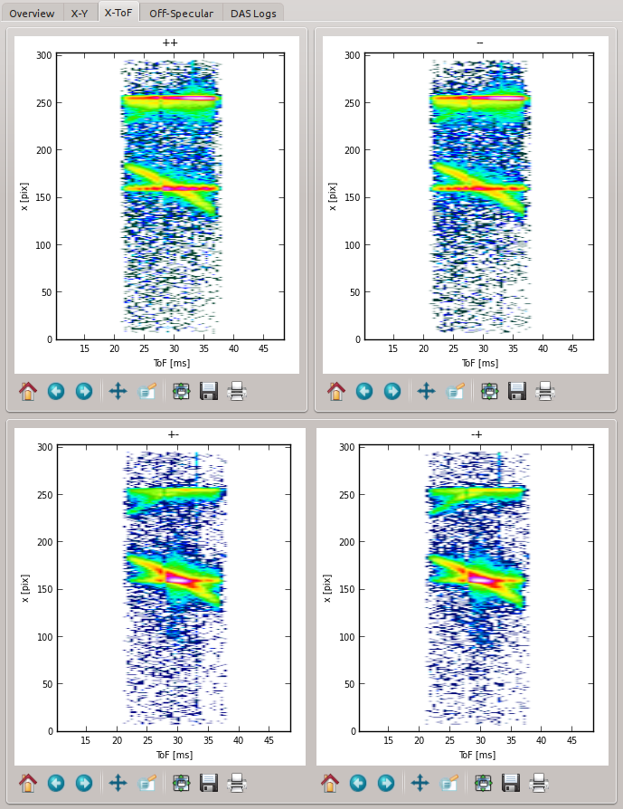
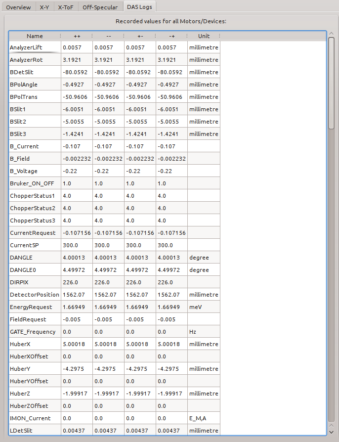
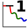
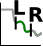

Subsections
2. User Interface

In addition to the default elements of a typical graphical user interface (GUI) like menu-, tool- and statusbar the QuickNXS program has a central area, which can be switch using the tab bar above, and several plot and option areas on the left and right side, always visible. Most users will work only with the "Overview" tab visible in the image above as it contains all valuable information about the current loaded dataset and the reduction parameters.
The on the left and right areas can be customized in size and hold parameter entries for the reduction as well as the projection and reflectivity plot, most important for the extraction.
The other tabs, shown below, allow a parallel view on the 2D maps of all spin states in the active dataset as well as a preview of off-specular and GISANS scattering, motor/controller logs from the current file and a large plot area to compare different reflectivities extracted earlier.
 |
 |
 |
 |
| X-Y-Maps |
X-ToF-Maps |
Off-Specular |
DAS Logs |
Each of the plots has its own toolbar described in the plots section and shows one specific aspect of your dataset.
It is often important to look not only on one of these plots to analyze the data, so it is good to familiarize with what you see there.
All options available in the toolbar are duplicated somewhere in the menus, to make it easier to find what you need.
The most important actions have keystrokes assigned to them for convenience.
The keys have been chosen to be accessible only with the right hand, so you can use them together with the mouse.
Most GUI elements have a tool tip assigned, so you can always position the mouse cursor over any element to get a more detailed description, what it is used for.
 File -> Open... (CTRL+O)
File -> Open... (CTRL+O)- Shows a dialog to select a file to be loaded. The filename filter depends on the selection of "Histogram" or "Event" mode in the Files area.
- File -> Open Sum... (CTRL+SHIFT+O)
- Allows to open several files to sum up their intensities
 File -> Next File (CTRL+D)
File -> Next File (CTRL+D)- Opens the file below the active selection in the Files area.
 File -> Previous File (CTRL+SHIFT+D)
File -> Previous File (CTRL+SHIFT+D)- Opens the file above the active selection in the Files area.
- File -> Load Extraction... (CTRL+ALT+O)
- Reads the header of an exported dataset (.dat) to reconstruct the options and load the data files used for the reduction. This can be used to improve an already exported dataset.
 Reduction -> Set Normalization (CTRL+W)
Reduction -> Set Normalization (CTRL+W)- Use the data extracted from the current file as a direct beam dataset. You can add as many of these datasets as you like or remove them by activating this action again. The appropriate direct beam run is selected using the number of time of flight channels in the file and the central wavelength, if this is ambiguous a dialog is shown to select one dataset.
- Reduction -> Clear Normalization (CTRL+SHIFT+W)
- Empty the list of direct beam datasets.
-  Reduction -> Set Scaling (CTRL+S)
- For the first dataset this tries to find the edge of total reflection and fit a constant to all points before it normalizes it to one. For subsequent datasets it fits a polynomial to the overlapping region of the active dataset and the closest one found in the reduction table to stitch them together. It is helpful to first define a suitable range of cut points to improve the results.
-  Reduction -> Cut Points (L/R) (CTRL+SHIFT+C)
- Tries to select good cut points for the given wavelength band based on the corresponding direct beam measurement.
 Reduction -> Keep Item in List (CTRL+Q)
Reduction -> Keep Item in List (CTRL+Q)- Use the reflectivity from the current dataset and add it to the reduction list. Only works for dataset with direct beam run. The options in the reduction list can still be changed later.
- Reduction -> Remove Line
- Remove the selected line from the reduction list.
- Reduction -> Clear List (CTRL+SHIFT+Q)
- Clear the full reduction list to start a new set of reflectivity.
 Reduction -> Reduce...
Reduction -> Reduce...- Use the items and options in the reduction table to export a dataset. Shows a dialog to select how the export should be done.
- Advanced -> Advanced Background ... (CTRL+B)
- Open a dialog with additional options for the background subtraction.
 Advanced -> Adjust Direct Beam
Advanced -> Adjust Direct Beam- For datasets where the direct pixel and or DANGLE0 values are not correctly defined, this action can take the current X-position of a direct beam measurement to set overwrite parameters accordingly.
- Advanced -> Clear Overwrite
- This clears the overwrite parameters defined with "Adjust Direct Beam".
- Advanced -> Polarization...
- Open a tool to plot polarization parameters of dedicated measurements. Not intended for users.
- Advanced -> Raw Data Comparison...
- Show a dialog to compare the raw data of the current run (not divided by direct beam) with the direct beam measurement and background. Can be helpful to identify problems with the direct beam normalization or the extraction window.
- Advanced -> Open Compare Window...
- Open a dialog which allows the direct comparison of different reflectivity measurements, can be used several times and is equivalent to the Compare tab of the main window.
 Automatics -> Automatic Peak Finder
Automatics -> Automatic Peak Finder- If checked, the program runs a peak finder and peak fitting algorithm on the X-projection of the data each time a new dataset is loaded and sets the X-center parameter accordingly. This works very reliable in general and is activated by default.
 Automatics -> Automatic Y Limits
Automatics -> Automatic Y Limits- If checked, the program detects the region, where the intensity in the Y-projection drops below a certain threshold and sets the Y-center and Y-width parameters accordingly. After adding the first dataset to the reduction table the option is switched off automatically to prevent issues at higher incident angle, where the intensity is comparable with the background. Clearing the reduction list will reactivate the option.
 Automatics -> Auto Reflectivity
Automatics -> Auto Reflectivity- When extracting several reflectivities with similar experimental setup the extraction parameters will likely be similar, as well. Activate this action at the total reflection run and it will use the current settings to subsequently scale and add all following datasets as long as the incident angle increases. Afterwards the Strip Overlap action is invoked. For good quality data this is a convenient way to reduce the full reflectivity very quickly.
 Automatics -> Strip Overlap
Automatics -> Strip Overlap- This option can be invoked directly before reducing the data to remove overlapping points between subsequent runs. The points are removed from the lower
 run, as these normally will have much lower statistics.
run, as these normally will have much lower statistics.
- Help Menu
- Online access to this manual and an about dialog.
- Debug Menu
- Useful things for program debugging.
This central tab shows information on the current dataset and the data reduction. A label at the top indicates the current file number, experiment ID, measurement type and the currently selected spin state.
The two map plots below the label show the projected intensities on the horizontal and vertical detector axes (left) and on the time of flight and horizontal detector axes (right), in the same way as it is show during data acquisition.
In the center some important parameters, extracted from the datafile header, are displayed. The SANGLE-calc and Counts ROI parameters also depends on the selected X- and Y- region and are thus not directly read from the file.
The mouse can be used to define the X- and Y-region in this plots similar as in the projection areas described below.
At the bottom you can find the reduction table and an additional tab with a list of defined direct beam datasets.
These tables show the parameters used for the respective intensity extractions.
These parameters in the Data tab can be edited afterwards and will be applied directly to the reflectivity curve shown in the Reflectivity area.
Directly above the table is a label showing the numbers of all defined direct beam runs and radio buttons to select the current datasets spin state shown in the Overview, projections and reflectivity plots.
The areas on the left and right of the window contain e.g. the projection plots and extraction parameters and are visible on any tab of the main interface. The left side contains option fields for the extraction parameters and file readout while the right side is dedicated for important plots.
Here is a list of the available areas from top to bottom, first on the left and than on the right hand side.
- Files
- A list of all datafiles in the current directory together with an entry to search for a file by number and select to extract either histogram or event mode data. In the event mode setting additional options will be displayed.
- Reflectivity Extraction (Basic)
- The parameters used to extract the active reflectivity. When adding a dataset to the reduction list, these parameters are stored in the Data table.
- Reflectivity Extraction (Advanced)
- Settings to change the extraction method or overwrite parameters otherwise read from the datafile. Options for the stitching algorithm can be found here as well.
- Algorithm Parameters
- Settings for the peak finder algorithm not important for normal user operation.
- Plot Options
- Global settings for the shown plots, does not effect the data reduction in any way. Here you can also chose to show the 2D datasets in wavelength and angle coordinates instead of time of flight and pixel.
- X-Projection
- A plot with the data of the loaded file projected on the detector X-axis. Black lines indicate the background region defined at the moment. The X-position is marked with a black line and the X-width with two red lines. The mouse can be used to change the background region and X-center using the left mouse button and set the X-width using the right mouse button.
- Y-Projection
- An equivalent projection on the detector Y-axis, showing the selected Y-region with green lines. The mouse can be used to change the Y-region using left clicks.
- Reflectivity
- Shows all datasets already added to the reduction list (colored lines) and the currently selected one (black line labeled 'Active'). For datasets without fitting direct beam runs it shows intensity and background vs. wavelength.
Datasets in the reduction list can be scaled with the mouse wheel when at the right x-coordinates (faster scaling when CTRL is pressed while scrolling).
Note that a dataset can be shown twice (as "Active" and with it's run number) when it is already in the reduction list and selected.
You can use the mouse wheel when your cursor is on top of a value entry to increase or decrease the according parameter.
This can be very convenient to see the result of e.g. changing the scaling factor for the current reflectivity. Holding down the CTRL key while scrolling increases the speed of the parameter changes.
The same method can also be used to scale datasets in the reduction table, simply by moving the mouse at the curve in the reflectivity plot and scrolling with the mouse wheel.
Each of the plots described above are created with the same framework and have a toolbar below them:
The first 5 items allow the navigation on the plot, like zooming in and out or moving the current view position.
The fourth icon from the left opens a dialog, which can be used to change the amount of frees pace around the plot to fit the current window scaling.
The following two icons can be used to save or print the plot. The last button allows to toggle between logarithmic and linear plotting (this is not persistent after changing the dataset).
Keep in mind that the X- and Y-projections as well as the overview maps can be used to select the extraction parameters.
This will only work when no scaling tool is selected from the plot toolbar.

Each entry created in the reduction table shows all important parameters needed for reflectivity extraction.
In addition to the parameters found in the Reflectivity Extraction area there is a value for the direct pixel (DPix) and relative detector arm position DANGLE-DANGLE0 (TTH) as well as the dataset and normalization file number.
Changing any of the reduction parameters (except for the two file number columns) immediately recalculates the extracted reflectivity.
All lines present in the reduction table are plotted together with the current dataset in the Reflectivity Extraction area.